There stands on the corner of Walnut and South 9th Streets a small Victorian mansion with a story, one with great acts of kindness that span multiple generations of Lebanon's rich history. And yes, it even includes iron, horses, a dash of the Coleman family, and some gold.
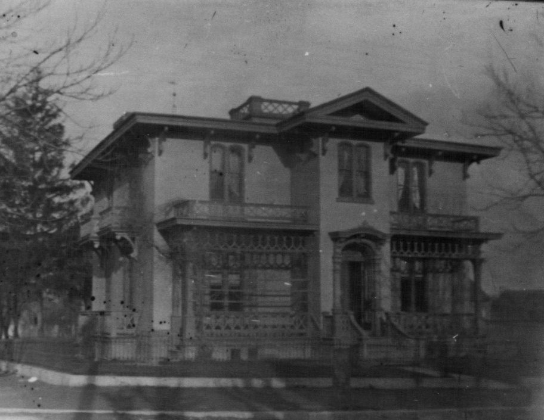
Today the mansion is the home of "Agape House," a women and children's shelter operated by the Lebanon Rescue Mission. The Mission purchased the home in 1985 for $50,000; the project became a mission that united all sectors of Lebanon, rallying agencies, 48 churches, civic organizations, community 10k runs, benefit concerts and other events. All told nearly $300,000 was raised to transform the deteriorating house from one of neglect into a comfortable home for women and children, a home that has now served Lebanon for nearly 40 years.
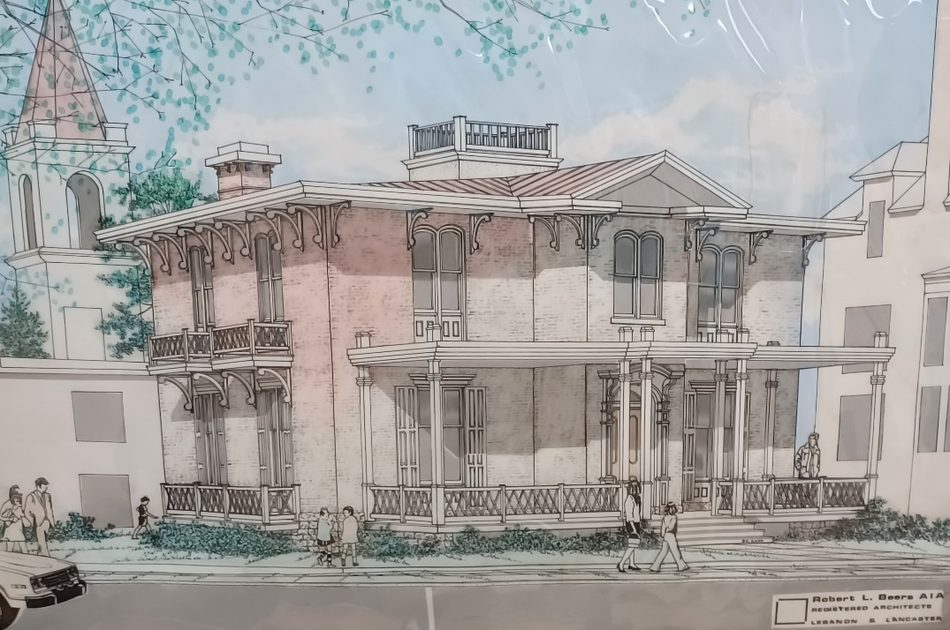
"AGAPE" was a word found in the Lebanon newspapers nearly every week for over a year, with articles and editorials reporting every inch of progress of the fund-raising goal until the shelter's opening in late September 1986. A large crowd had gathered for the anticipated event, despite the discouraging rains.
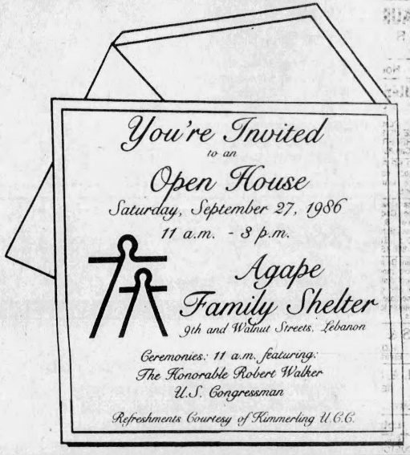
Agape (ah-GAH-pay) is an important Greek word from the Christian scriptures that means "Love" of the highest kind, active, giving, sacrificial. Our concept of the word "charity" is one facet of that grand word. Kindness is another.
That house on the corner had been known for years as the DeHuff house, although in fact it was first the home of the Nutting family. The DeHuffs resided in another grand mansion six blocks east on Chestnut Street.
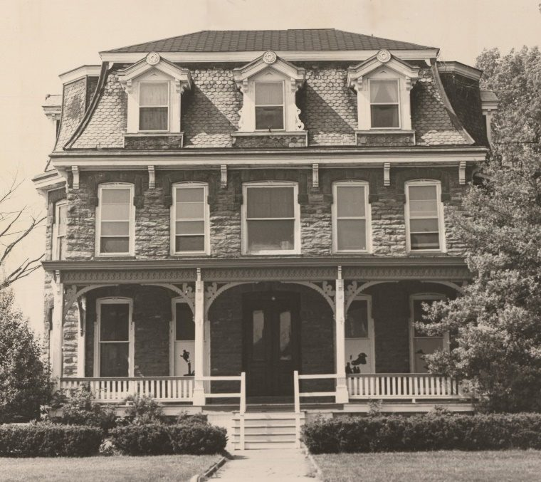
If not too confusing — the DeHuff family came to live in the Nutting's house at 139 South 9th, and Nutting family moved into the DeHuff house at 239 Chestnut, which became known about town as the "Nutting House." Beginning in the 1950s this house was transformed into a kindergarten, going through several phases as a nursery and day care until 1999, when purchased and restored as a private residence.
If you pull on the thread connecting those two families, significant pieces of Lebanon history unravel.
A Ghost Story Debunked
A myth of a haunting unfortunately arose around the legend of the DeHuff and Nutting homes. It goes like this:
A. (for Abraham) Gilbert DeHuff had built his grand home at the corner of Chestnut and 3rd in 1882. He and his wife Emma Greenawalt DeHuff raised 9 children through 1893. Late in 1882 their two young daughters Mary and Margaret died at ages 3 and 5 of diphtheria. This much is true.
It was also said that the Nuttings, living at their Victorian mansion at Walnut and South 9th Street had lost two young children. This is not true — their four children all lived into adulthood.
The myth continues that the two grieving families decided to swap homes, believing the houses had something to do with their tragedies. The grief was real, but it was an act of kindness and inter-family connections that led to the exchange of the two properties.
Let's back up and tell the real story.
A. Gilbert DeHuff (1838–1897)
The writing of this story was precipitated by the recent visit by A. Gilbert DeHuff's great-grandson John DeHuff, Jr. with his son to the Lebanon Rescue Mission. John, a New Jersey man, came researching family genealogy. His father, John Sr., had grown up in the Walnut & 9th Street mansion and John Jr. would later visit on occasion in his youth. He knew it well as the "DeHuff house."
Abraham Gilbert DeHuff's father Henry was a coppersmith (as was his grandfather) from the Lancaster and York communities before moving to Lebanon by 1820. The previous generations had descended from John DeHuff (1704–1751) of Alsace, France, among the Huguenots (persecuted French protestants) who came to the Lancaster region. Henry had 14 children by two wives; Sarah his first wife died nine years into their marriage. Gilbert was the third child of Henry's second marriage to Margaret Arndt.
According to his obituary Gilbert's early education was the "old Lebanon Academy," under Professor J. H. Kluge.
At age 24 Gilbert is found in Washington D.C. registered in the census as a printer. During the Civil War he served in the Navy in 1862, as the clerk of Captain John C. Beaumont, who later became Admiral, and served on several warships.
John Jr. shared the story from Gilbert's civil war diaries of a document Gilbert received from the war department; he was awarded several hundred dollars as his share of the profit from their capture of a Confederate ship.
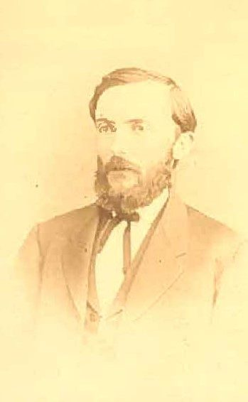
Back in Lebanon a few years after the war he purchased a surveying business from Isaac Hoffer and John Yingst. According to the 1870 census he lived at home in the 2nd ward at 264 Chestnut Street with his mother Margaret (father Henry having died in 1854), and was registered as a railroad clerk. He would continue working for many years for William C. Lorenz, resident engineer of the Lebanon Valley Railroad. (Note: this railroad is the line that continues to run through Lebanon today, from Reading to Harrisburg, previously as the Philadelphia-Reading and now Norfolk Southern.)
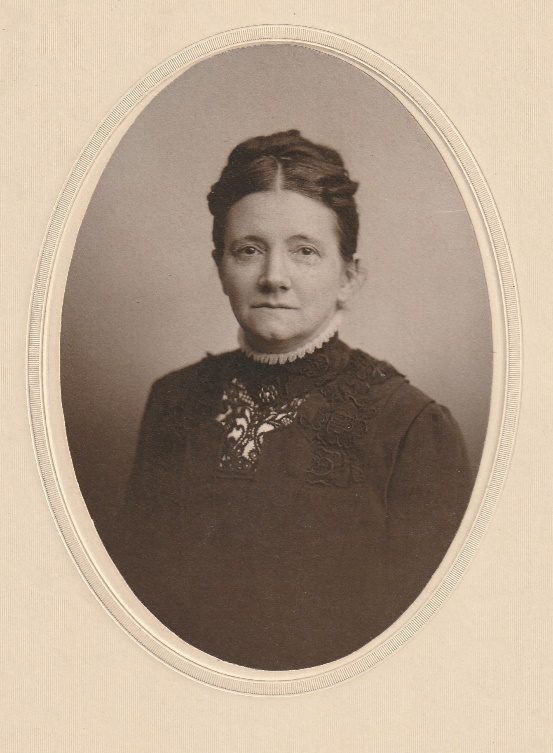
Gilbert married Emma Greenawalt (m. 1870), whose family name (Americanized form of German Grünewald) appears in previous generations of the DeHuffs, and among residents in the region today. Her parents were Charles and Mary Ann Greenawalt, registered as a merchant in the 1850 Lebanon census.
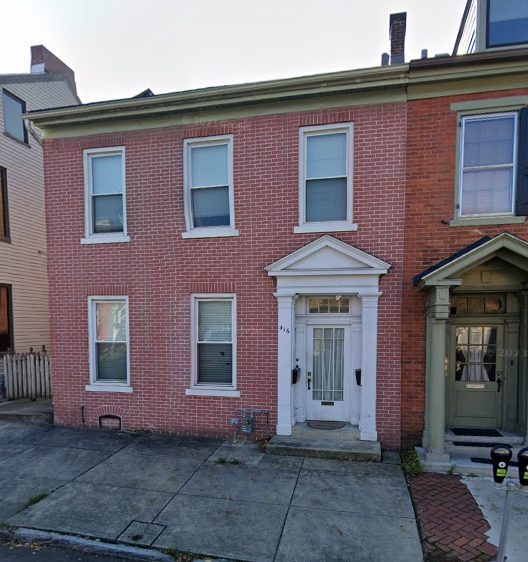
Gilbert's surveying career had transformed into "civil engineer," as registered in the 1874 Lebanon city directory, where he lived with his young family at 416 Cumberland Street. Six years later the census shows his family growing, as was his career as a civil engineer.
DeHuff's employment with the railroad continued until early 1877, having been stationed in Reading, when his job was discontinued by the railroad's "retrenchment" (what we now call "down-sizing").
A House of Heartbreak
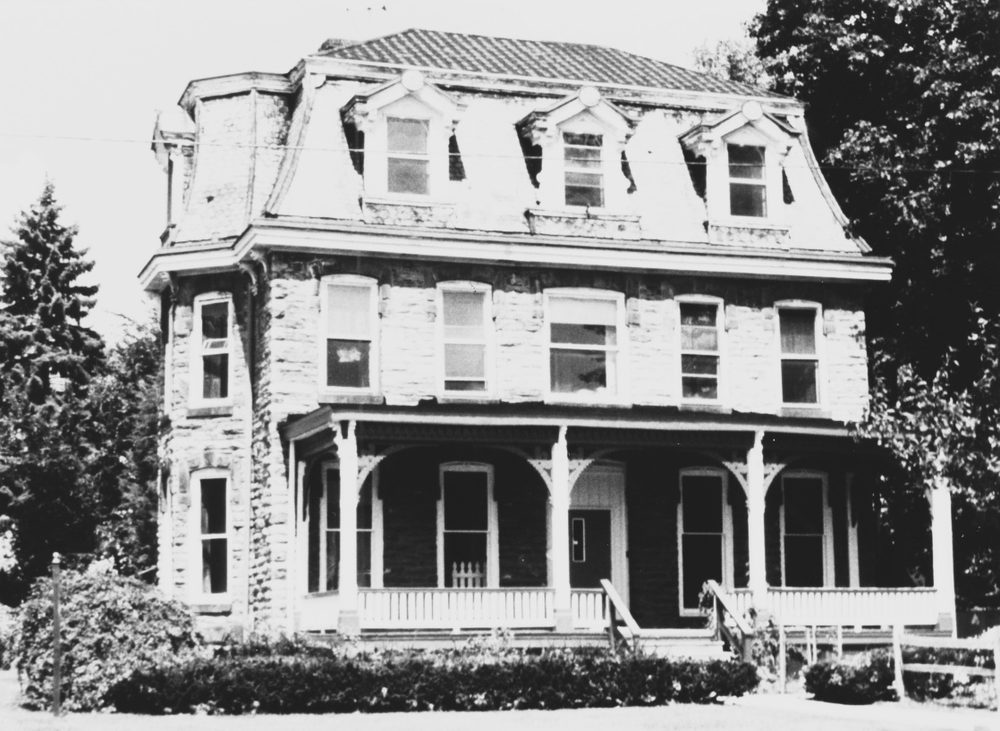
In 1882 DeHuff built the grand mansion on the lot across from his mother's property, to become 239 Chestnut Street at the corner of 3rd Street. Appearing in Philadelphia architect Isaac Hobbs' book and in an 1883 women's magazine the home is described as a French Gamber Cottage, shown with detailed floor plans, built of brown stone and hardwood finish throughout, at a cost of $9,000. Another account describes limestone coming from the Lancaster quarry.
It was in that house just months after its completion, that two daughters died of diphtheria, first Margaret at age 3, then two weeks later their older daughter Mary at age 5. The tragedy cast a deep shadow over the blessing of their grand new home.
The shadow persisted five years until in 1887 (the same year he lost his job with the railroad) when the DeHuffs "down-sized" and exchanged properties with the Nuttings. He sold the 239 Chestnut house to Nutting at a profit for $16,000 and bought the "Nutting House" at 139 South 9th Street for $10,000. From that point on the two houses became known by the names of their new owners.
So, it was not ghosts, but a mixture of necessity, and perhaps some grief at losing two precious daughters five years earlier.
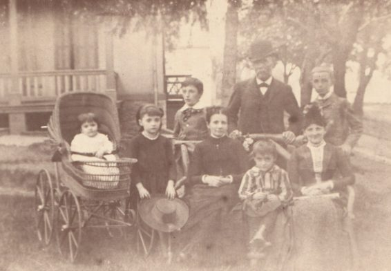
Introducing the Greenawalt and Meily Families — "It's Complicated"
Gilbert's wife Emma was the daughter of Charles Greenawalt, proprietor of a hardware store on Cumberland street. The newspaper report of his death describes the Greenawalt family as "one of Lebanon's oldest and most esteemed."
Greenawalt's original hardware store was adjacent to the home of John Meily. John's first wife, Helen Halter, of Washington D.C. died in 1873. As it turns out, Helen's younger sister Louisa had become married to Lyman Nutting.
After Helen's death, John Meily married "Kate" (Catherine) DeHuff, daughter of the hardware store proprietor next door and sister of Gilbert.
Keeping all in the family, John's younger brother Richard later married the younger DeHuff sister, Anna.
Although the Colemans were renowned for being born into an iron dynasty, other iron families in Lebanon arose from marriage. The Meilys were iron men, in business with Lyman Nutting since 1867. It is through this connection that the Nuttings and DeHuffs became related socially, attending functions in the DeHuffs' Chestnut Street home (more on these details in the next installment).
The diagram would be further complicated by including the Garner and Gloninger family connections. The "ten" remain together as they now share in common their final resting place in Mount Lebanon Cemetery at 235 East Maple Street.
Not Iron but Sandstone
By 1889 Gilbert DeHuff was advertising in the Lebanon paper, looking to hire a crew of 20 men to open a quarrying business along Robert H. Coleman's Cornwall & Lebanon Railroad near Mount Gretna. In developing the sandstone he discovered a vein of ochre, a type of iron oxide, whose properties were useful for pigments in a variety of applications.
Mike Weber, volunteer geologist at Cornwall Iron Furnace remarks that once the ochre had been stripped off, the underlying clay would have been accessible for use in making bricks. Indeed, the sandstone quarry became Mt. Gretna's brick plant by the early 1900s.
A property listing describes the Mt. Gretna concern as having two dwellings, a blacksmith shop and considerable machinery and other capital assets.
A. Gilbert DeHuff teamed with his brother-in-law Philip S. Greenawalt as partner in the quarry business. Philip had taken over his father's hardware store and was also serving as a director of Lebanon's Valley National Bank. Incidentally, the two men were sued over contractual matters by Robert H. Coleman's Cornwall & Lebanon Railroad.
Final Years
Newspaper accounts recorded a number of DeHuff's real estate transactions. He seems to have been busy acquiring and selling properties, seeking to profit from Lebanon's expansion. A few years earlier, the city's leaders celebrated this golden era (and Robert H. Coleman's role).
In 1892 DeHuff had renewed his interests in the Washington area and bought a farm in Guinea, Virginia (south of Fredericksburg near what are now Rt 17 and I-95), with intentions to relocate, though never realized. Various accounts in the Lebanon newspaper show him putting his various properties up for auction, including those in the city, at Mount Gretna, and his residence at 139 S. 9th and Walnut. The auction of his home went up to $8,000 but postponed indefinitely for failing to reach the needed threshold.
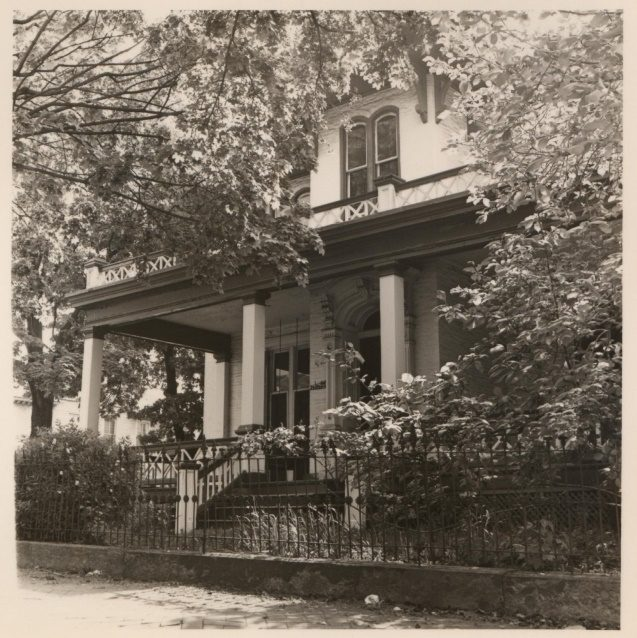
He did sell his 139 S. 9th Street home in 1894 to Harry H. Light in a trade that involved other properties. The fact of this sale is puzzling, because as mentioned above the house was back in possession of the DeHuff family in the early 1900s until sold in the 1980s. John DeHuff, Jr. offers the opinion that it was another "act of kindness."
Possibly Mr. Light purchased the house to help Gilbert realize his dreams to move to Washington, though unfulfilled. Then, Mr. Light sold the house back to the family after Gilbert's death. This is plausible as the DeHuff daughters were friends of the Lights' daughters, according to the newspaper social pages.
The 1895 city directory shows him owning a house back on Cumberland Street, a few blocks west of where his married life began 25 years previously. His mother, having died in 1891, left him her home at 520 Cumberland.
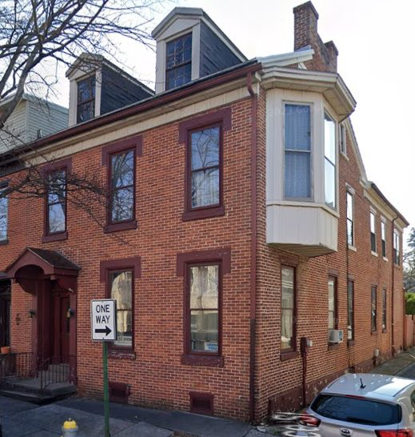
A. Gilbert DeHuff, Man of Faith
For so many of that era church membership was customary and presumably heartfelt.
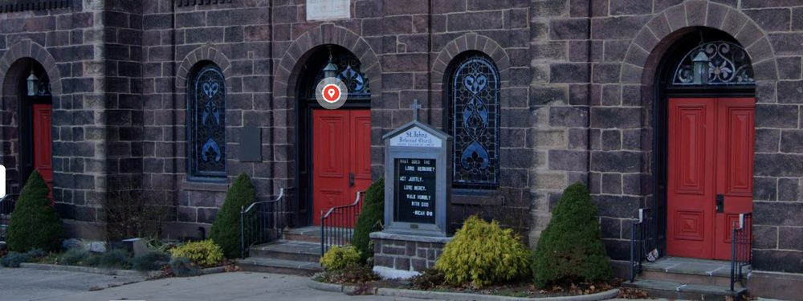
Beginning in 1877 or earlier, Gilbert DeHuff was known for his faithful participation at St. John's Reformed Church on Willow Street near 10th Street. So also were the Meilys and Greenawalts.
DeHuff appears in newspaper accounts as a benevolent man, contributing to Good Samaritan Hospital and other charities. His obituary commented: "He was a faithful member [of the church] and took a deep interest in its work." Further, "He was a loving husband, devoted father and his death causes deep sorrow in the household."
He continued to trade real estate until his death in 1897. At age 59 he became ill for about a month's time until dying of pneumonia.
A Final Twist
In researching this story, John DeHuff, Jr. now realizes the consequence, had Gilbert succeeded in selling the "DeHuff" house at South 9th and Walnut Streets in 1892. He had dreams of moving his family to the Virginia farm, near the place of his years of naval service.
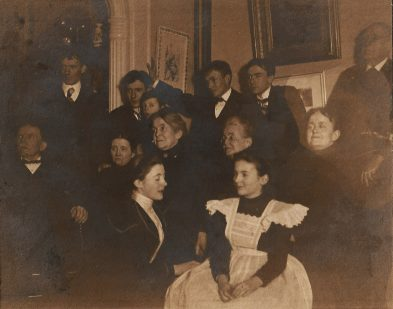
John's grandfather Philip Greenawalt DeHuff (named for his uncle) was born in 1893 and would not have grown up in Lebanon had the family moved to Virginia. In shades of "Back to the Future," John's grandfather would not have met his bride Stella Garner, of Lebanon's Garner family.
Pulling the thread further, neither John Jr. nor his father John DeHuff Sr. would have been born. The DeHuff mansion would not have returned to the DeHuff family, nor would it have been sold to the Lebanon Rescue Mission in 1985, nor would so many women and children have been aided by the kindness of the people of Lebanon.
As St. Paul had written to the church in Rome long ago, "All things work together for good for those who love God." Funny how things work themselves out!
Previously in this series we introduced two famous Lebanon homes and the two families who "swapped" their dwellings in 1887 out of friendship and satisfying the needs of both. Having lost two young daughters the DeHuffs felt a cloud of gloom over their home on Chestnut Street.
We turn from the story of Gilbert and Emma DeHuff to their friends Lyman and Louisa Nutting.
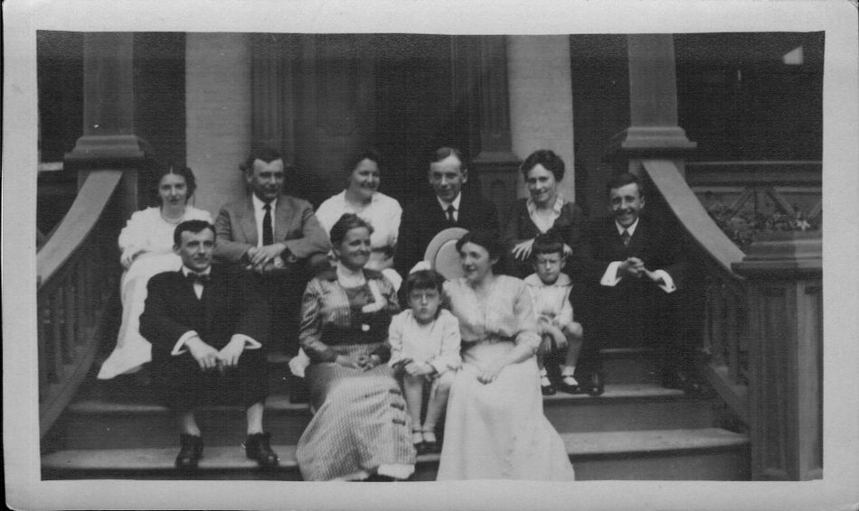
In 1883 the Nuttings were comfortably settled in their home at the corner at Walnut and South 9th. The DeHuffs, Gilbert and Emma had just built their grand home at 239 Chestnut Street the year before and in that October had suffered the loss of two young children.
Of course in building his house on Walnut and South 9th Streets in 1870, Lyman Nutting had no idea it would become a women's shelter a century later, known today as Agape House, operated since 1985 by the Lebanon Rescue Mission for women and children.
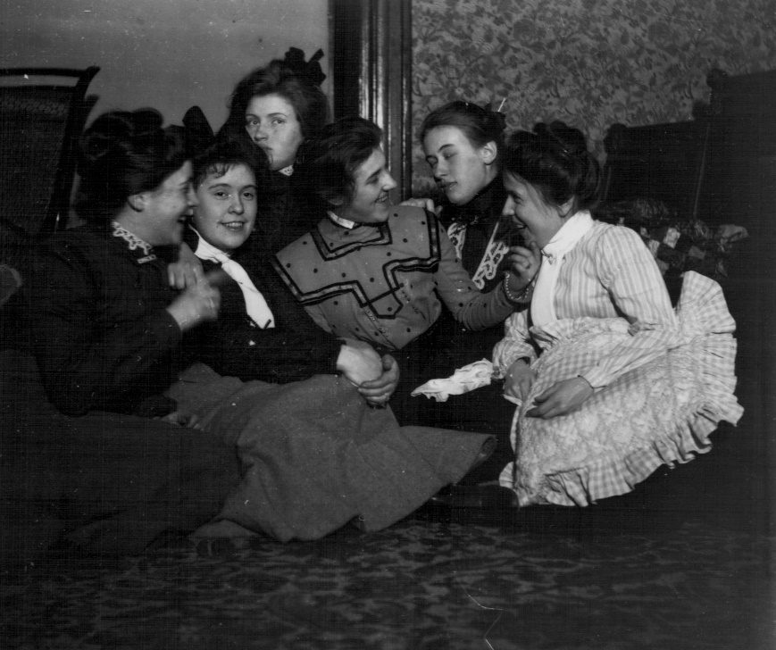
And, if you could ask her, Mrs. Nutting would tell you that Agape was not the first women's home in Lebanon. While her fingerprints may be found on the "DeHuff House" (above), which became Agape, her true labor of love was a different house, the "Home for Widows and Single Women of Lebanon."
Lebanon's First Women's Home
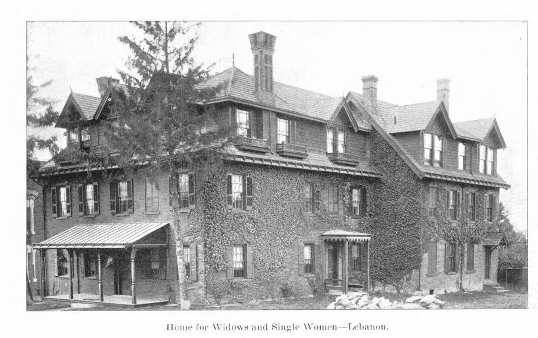
By the end of the year they had drafted a charter and successfully petitioned Lebanon's court of common pleas for approval of a charitable association, which began a public campaign to raise funds. By the end of the year in the height of the Christmas season, they had purchased the above brick dwelling from John Light, for $2,500. They expended an additional $650 for repairs.
The first resident came in April 1884 and occupancy rose to 16 by 1887. A grant from the state brought the introduction of water and steam heat.
The charitable association, consisting of 451 residents of Lebanon eventually paid off its debts and shored up its financial assets to sustain operations. Women of note, in addition to Mrs. Nutting, included Mrs. Bertram Dawson Coleman and Mrs. Horace Brock. From Cornwall, the women known as "R. W. Coleman Heirs" donated an adjoining property.
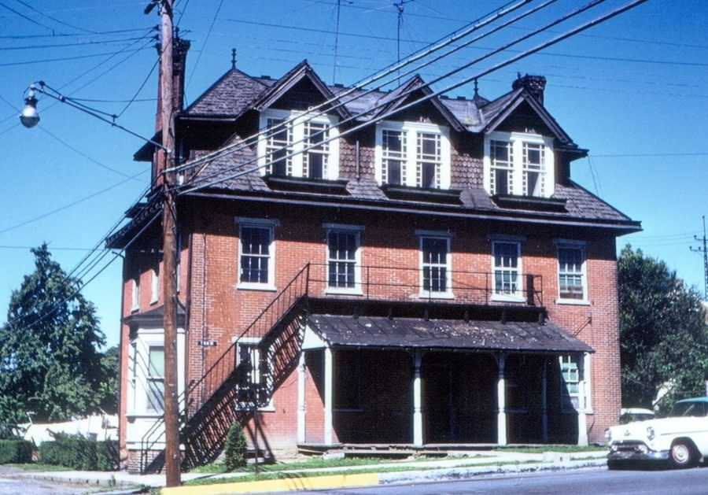
The Home served the community for 40 years. By 1922, when expenses for maintenance and repairs were mounting, another committee began meeting to replace the home with a new facility.
A publicly-spirited fundraising campaign again transpired during 1923, raising $100,000. The new home was built on a lot on Oak Street known as "The Heights" near 12th Street.
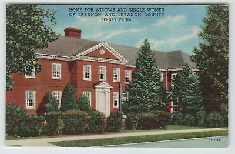
The new home served for many years, and more recently became known as "Oak Terrace," an affordable housing apartment for seniors, operated by Community Homes of Lebanon County.
Let's regroup and pick up the family thread in this story.
Lyman Nutting (1824–1893)
The Nutting name has faded from local memory. His remaining legacy in Lebanon is the five-story "skyscraper" that he began building in 1892 at the corner of 8th and Cumberland. Many today know it as the Samler Building for the man of "Bon Ton" department store fame who purchased and completed it.
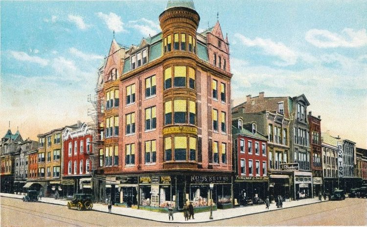
Stories abound; without the benefit of an elevator, one woman remembers climbing four flights of stairs as a young girl going to dance classes on the top floor.
Lyman Nutting was not a local man; he was born in 1824 in Otisfield, Maine, of Lyman Nutting, Sr. and Charlotte Chadbourne.
This author, also not a local man, was surprised to discover a family connection; Lyman is a close cousin four generations removed.
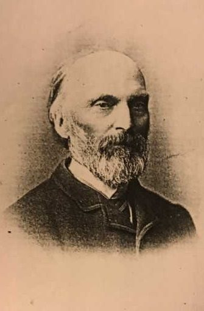
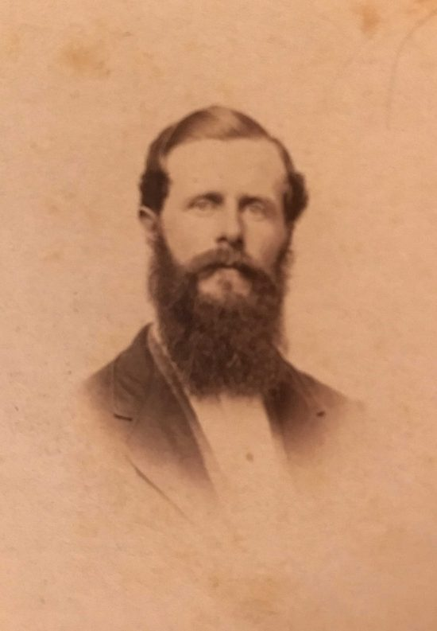
As young men in their twenties, he and his older brother James left the farms and forests of western Maine. James had studied law but came to Pennsylvania as a teacher and opened a school in Womelsdorf.
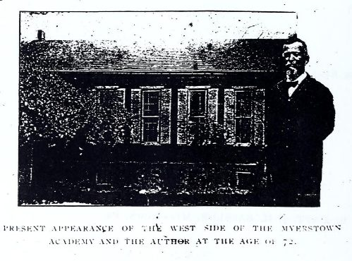
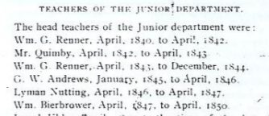
Lyman came a few years later, following his brother in teaching. Having attended Bridgton Academy in Maine, Lyman taught school locally at the Myerstown Academy in 1846–47 and was the principal of the English department.
The academy closed in the 1860s and the Joseph Liebovitz clothing factory was built on the property; that building still stands at 113 E. Main Street. Albright College's roots spring from the Myerstown Academy.
Lyman's Gold Fever
In 1849 Nutting, age 24, went to Ohio to study law. His studies were soon interrupted when he obeyed the siren call, joining a prospecting company headed by Ohio governor Wilson Shannon. Haskins' history of the gold rush, "The Argonauts of California" records their company departing New York February 21, 1849, on the ship "J. G. Costar" headed for the west coast.
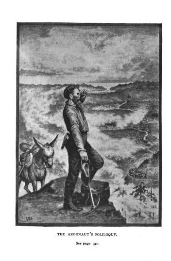
A successful Lyman returned in 1859 to nearby Pine Grove, having learned the value of trading real estate and merchandise in times of economic expansion, a lesson he would learn to apply in Lebanon.
Since the 1840s Pine Grove had been booming, with men seeking their fortune in coal mining. The Union canal and the introduction of coal were transforming the local iron industry. The canal branch had been finished in 1832 providing transportation of the coal to the new anthracite furnaces around Lebanon.
The 1860 census registers Lyman in Pine Grove as a coal worker with $25,000 in real estate assets, boarding with Wm. Graeff, a farmer. William's daughter had become the wife of brother James L. Nutting.
Lyman Nutting invested his capital in the Rausch Creek colliery with John Graeff, D. R. Miller and Reuben Stiess.
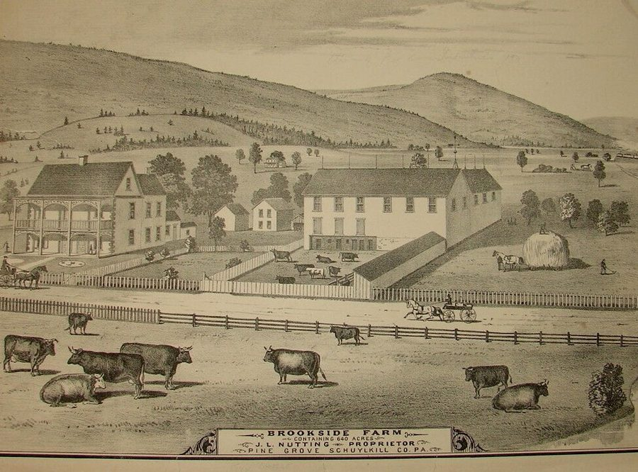
James later became a gentleman farmer on an estate known as Brookside and became engaged in politics. He succeeded in a contested race to the nation's 45th Congress from the 13th district of Pennsylvania.
In related trivia of that era, a famous Californian named John Sutter returned impoverished to this region in 1865 and is buried in Lititz.
Readers might also be interested to learn that portions of Schuylkill and northern Lebanon counties near Pine Grove have, in addition to coal, their own history of gold mining (see for example "Gold Mine Road" northeast of Fort Indiantown Gap). Returning miners experienced lingering gold fever, noticing similarities between the terrain around Pine Grove and Sacramento, leading to local prospecting. They remained at it into the 1890s.
Louisa Halter Nutting (1839–1919)
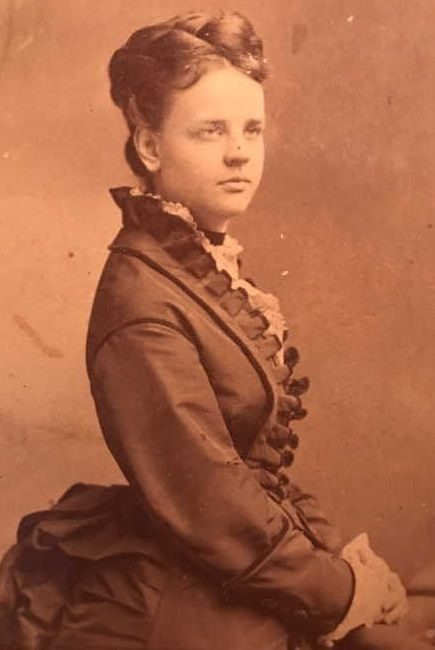
In 1862 Lyman Nutting married Louisa Mathilde Halter of Pine Grove and they soon raised a family of four children. They lived in the house built in 1823 for the son of Michael Ley, the architect of Tulpehocken Manor. The mansion has since been known as Nutting Hall.
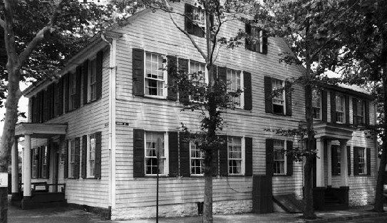
Louisa's father Nicholas Halter had come from Switzerland and married Catherine Flickinger in Berks county in 1821. Louisa was born in Washington D.C. in 1839; her mother died in 1842.
Upon remarrying and moving to Iowa, Nicholas sent his daughters back to Pennsylvania. The 1850 census shows 12-year-old Louisa Halter living in Pine Grove in the home of coal operator and clerk Joseph Strimpfler and his wife Elizabeth, with another young woman. The 1860 census confirmed that it is the same Louisa from Washington D.C.
An 1880 obituary for Elizabeth clarified that she was Louisa's aunt, and had lived with the Nuttings for the last few years of her life.
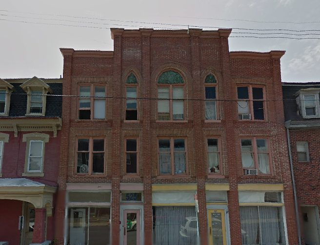
The Meily Connection
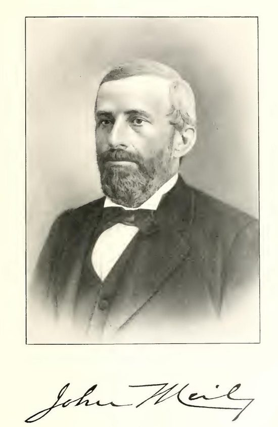
Another in the DeHuff circle was John Meily (also of Swiss descent) born 1826 and raised in Mechanicsburg. After his schooling he was a clerk, and then involved in the Union canal with his cousin (later Senator) George F. Meily, with offices in Jonestown and Middletown.
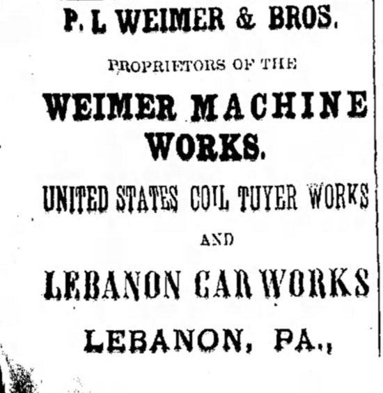
The 1860 census lists him as a "transporter" in Lebanon, having erected a rail car works on North 10th Street, which relocated four years later to North 7th Street when he had entered into partnership with Peter L. Weimer.
During the Civil War he mustered with the Pennsylvania 110th Infantry, discharged in 1865.
In his 1904 paper to the Lebanon County Historical Society, Henry Grittinger explained the connection between Meily and Nutting. In his early career Meily had acquired sufficient knowledge of the iron business. He formed "Meily, Nutting & Co.," with Henry Meily, Richard Meily and Lyman Nutting, and in 1864 they purchased the Middletown Anthracite Furnace (built in 1853).
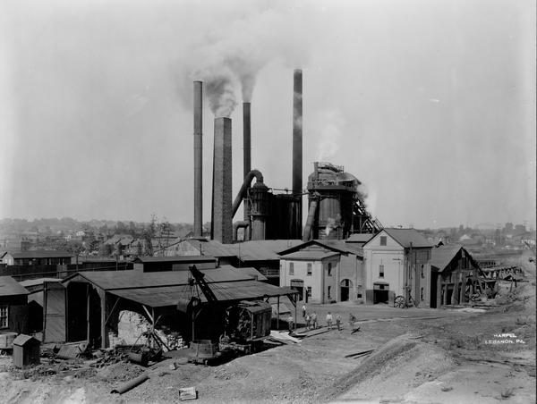
In 1867 they erected the Lebanon Valley Furnace on Brandywine creek between Forge Street and the Lebanon Valley Railroad. The furnace was in the vicinity of G. D. Coleman's North Lebanon furnaces. Grittinger described their furnace as "small, but with a good record, staying in almost continuous operation."
Much like his esteemed contemporary Artemas Wilhelm, Meily's biography credits the success that attended his business career "largely due to his thorough attention to detail, intimate knowledge of his undertaking, and his high sense of honor which gave absolutely fair treatment to customers and employes alike."
After Helen's early death in 1873, John remained a widower for ten years until marrying Kate DeHuff, daughter of the hardware proprietor next door on Cumberland Street.
While a widower John Meily filled the office of Chief Burgess ("mayor") of the borough of Lebanon in 1880.
He also served as president of the Lebanon County Insurance Company. For many years he was a member of St John's Reformed Church of Lebanon in which congregation he was a prominent figure.
All in the Family
Close consideration of the family diagram found in Part 1 of this story raises a number of questions. How did Meily and Nutting meet, and how do their marriages to the "Halter" women fit into the picture?
John had married Helen, Louisa's sister, in 1852, ten years before the Nuttings married in 1862.
One theory would be that the two men met in the early 1860s while Lyman was in the coal business in Pine Grove and John Meily was working for the Union Canal in Jonestown (incidentally the name "Meily" occurs earlier, a teacher in Myerstown when Nutting was teaching there in 1846 but any connection is uncertain). The Pine Grove branch of the canal served the coal business; as the two men connected first through business and then socially, John's wife Helen might have introduced Lyman to her sister.
What is unclear is how John met Helen, remarrying in 1852. She was from Washington D.C. and is not found in the Pine Grove census. She may have been living in the area with another relative after her family had split up.
A different theory regards Louisa as a teenaged woman living in Pine Grove. She had been living with John and Elizabeth (her aunt) Strimpfler, a clerk, possibly in connection with Lyman Nutting's coal business. John introduced his business associate Lyman to his ward, the young woman in his household. Once they had married it would be inevitable that "brothers-in-law" Lyman and John became acquainted.
A Home of Their Own
The 1870 census reveals "iron master" Lyman Nutting having a personal estate of $100,000 and property valued at $115,000. The family home in the boarding house on North 9th Street was conveniently situated near his Lebanon Manufacturing Company on 10th Street and the Lebanon Valley Furnace a few blocks further west.
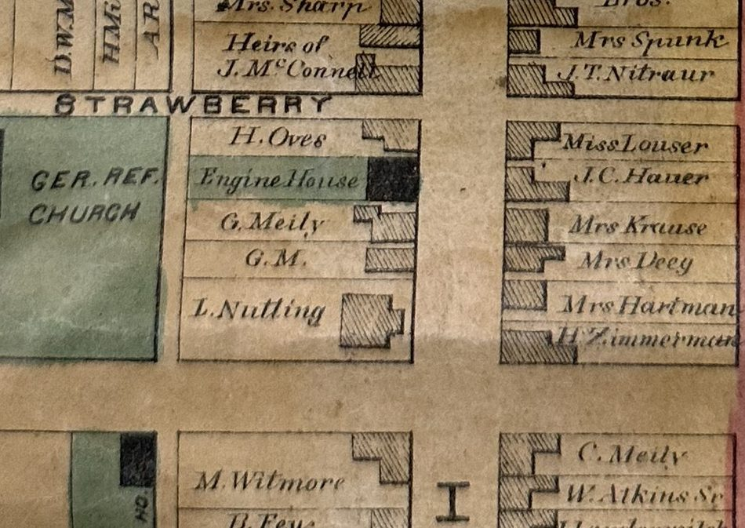
Oves was a respected senior citizen, and prominent in the Lebanon County fire company, living next door to the "Engine House."
The Nuttings began building the two-story brick house that has become the feature of this story. The 1880 census reports them living there with four teenaged children. His profession then listed simply as "At Home." According to the 1870 map (above) they had chosen a familiar neighborhood with members of the Meily family living next door and across the street.
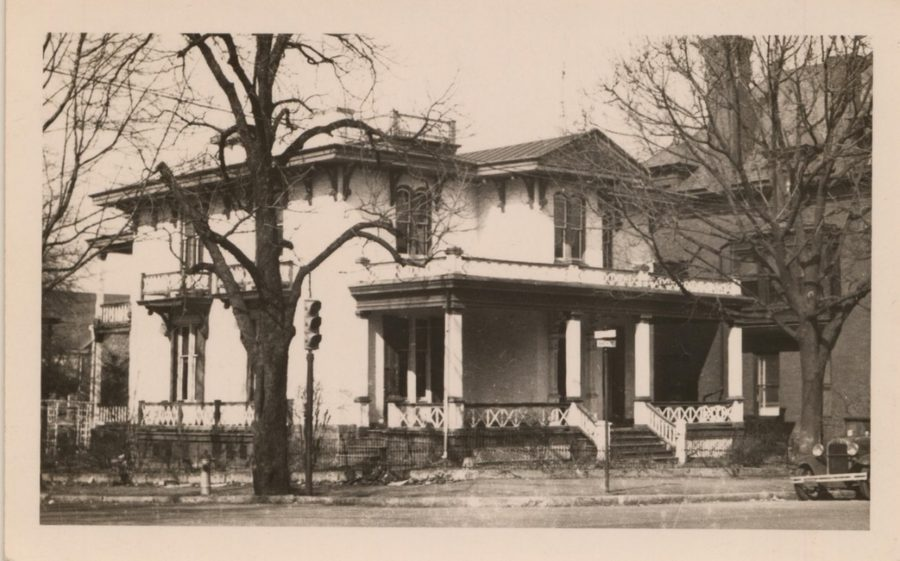
Moving to 239 Chestnut Street
What really prompted the Nuttings' decision to "trade" properties with the DeHuffs in 1887? Part 1 of this story raised their "act of kindness" toward their friends through the social engagements of the extended family. They probably saw one another every week at church services and functions.
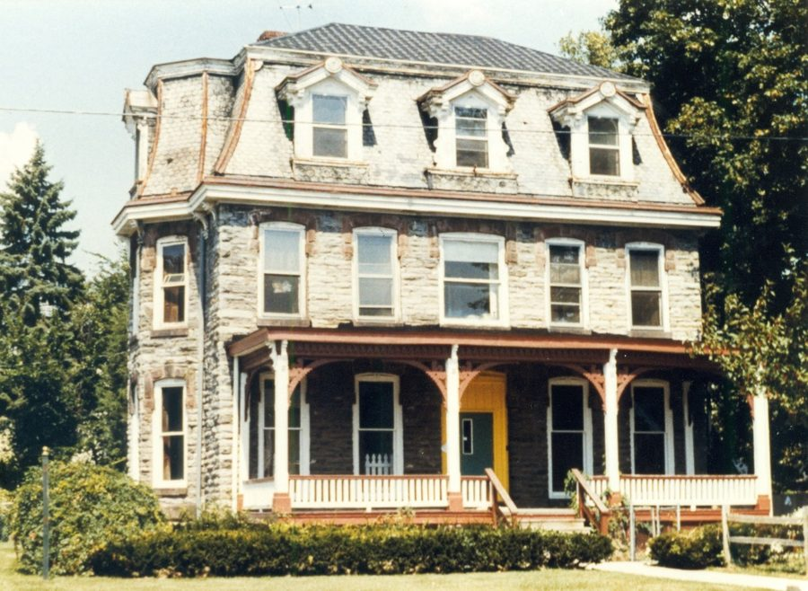
Given the social functions in the DeHuff's home on Chestnut Street old reports say the Nuttings had become fond of its elegance. With their continually rising fortunes and esteem in Lebanon society, desiring a grander home is not surprising.
In that year their youngest child William Nutting turned 18. Perhaps the "empty nest" made the move easier, though only eight blocks away.
Three sons were away at the Hill School in Pottstown and then attended Princeton University as civil engineers. Two of them would later join their father in developing the East Lebanon Iron Company on 5th Avenue and other business enterprises.
Nutting's Other Pursuits
In 1867, still in the iron business, Nutting was also listed as a director of the newly commissioned Reading and Trevorton Railway Company.
At age 50 he sold his share of the iron business to John and Richard Meily for $150,000, at which time (1874) the firm name changed to "J. & R. Meily Co." He retained ownership of the Middletown furnace until 1880.
During the 1870s Nutting invested further in real estate, including a farm in Cornwall he bought in 1872 from Samuel and Alfred Hauck for $20,841. It was purported to have an iron ore deposit. In exchange he sold a Pine Grove farm to the Hauck brothers for $7,000.
His name appears frequently in the affairs of the State Agricultural Society, having served as a vice-president.
In 1874, the same year he left Meily & Co., the Lebanon Daily News was referring to him as "our esteemed townsman." Another account called him "visionary," having invested a great deal of money in modernizing Lebanon.
He was stockholder and director of the Edison Illumination Company (formed in 1880), as well as the Lebanon & Annville and Lebanon & Myerstown Street railways, the Lebanon Manufacturing Company, the West End Rolling Mill Company, the Lebanon Valley Traction Company, the Lebanon Market House, and the Lebanon Steam Heating Company.
His sons worked alongside him and developed the companies further. William extended the steam lines throughout, from Lehman to Chestnut Streets, between 3rd and 10th.
"A true philanthropist, his charitable donations helped improve the conditions of the poor. His interest in promoting higher education endeared him to all who knew him."
Yet another, "genial in disposition, unostentatious, a man of sound judgment, making wise investments for himself and giving counsel to many who sought it. Nutting epitomized the spirit of kindness toward others."
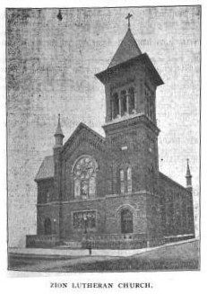
He assisted Zion Lutheran Church's construction of a new building on 9th Street, having taken down the 30-year-old structure on that site. He and Louisa hosted "Mite Society" socials at their home to raise funds for the new church.
Some Unhappy Horse Stories
Whoever quipped "get a horse!" should reconsider.
One concerning event occurred in 1875 when Mrs. Nutting and the children were out in their horse-drawn carriage at Sixth Street and Walnut Alley. Louisa had disembarked to visit a friend, granting the children permission to drive the carriage a short distance. They attempted too sharp a turn, upsetting the carriage and throwing the horse on its side.
Despite being shaken, thankfully all were well, including the horse. Just a year before a more tragic story had unfolded, the fatal fall of 14-year-old James Coleman from his horse in Brickerville.
Twenty years later their son Harry, "a noted gymnast and horseman" was kicked in the knee while working in the stable. Dr. Gloninger, the family physician, recommended skin grafts to heal the wound. Harry's brothers and six friends showed up at the Chestnut street mansion, each donating a piece of skin from his arm, which the doctor applied to the knee. The operation was successful.
Finally, a horse proved the demise of Lyman Nutting. At age 68 he died of lockjaw (tetanus) "superinduced by a kick on the arm from a vicious horse." While the family was away at their Chautauqua cottage in Mt. Gretna, Lyman remained working in Lebanon where he suffered the kick. He visited the family at the cottage on Sunday, complaining of his injury. He returned to the doctor on Monday, only to die that evening.
His obituary told of his extensive holdings in real estate and mentioned his Cornwall farm. He had kept a farm in Pine Grove all of those years after moving to Lebanon and was frequently mentioned in the local Pine Grove Herald as a prominent citizen.
He was lauded for the magnificent five-story structure and business block opposite the courthouse. In years later his son Harry would use the building to house "The Scenic," Lebanon's first movie theater.
Also mentioned in the obituary was the fact that Lyman Nutting was cousin of "our townsman" W. K. Woodbury, Esq. Woodbury began practicing law in Pottsville and Pine Grove, and later in Lebanon County.
After his death, Lyman's sons continued in managing his firms, including the Edison Illumination Company. William and Harry expanded Lebanon Market House Company to consolidate other market houses in Lebanon.
Louisa Lives On
Lyman's penchant for real estate was carried on by Louisa after his death in 1893. As mentioned in the beginning she had already been very active in the 1883 development of the Home for Widows and Single Women.
Into the 1900s numerous real estate transfers are listed in her name in all quadrants of Lebanon. She seemed to be liquidating properties Lyman had owned to sustain her lifestyle.
She sold the family cottage at Mt. Gretna for $900 and bought lot #68 for $50, perhaps downsizing but still participating in the Chautauqua lecture programs.
She continued living at 239 Chestnut Street, dying on August 1, 1919 with a modest estate. The house passed to her daughter Mary who lived there until 1949.
Thanks to a visitor from New Jersey, this series began with the "DeHuff House," home to the Lebanon Rescue Mission's "Agape Shelter." The first family to enjoy it since 1870 was Lyman and Louisa Nutting (Part 2), followed by A. Gilbert and Emma DeHuff in 1887 (Part 1).
The series has grown legs, if not wings, as contributions from other readers continue to breathe life into the story. One woman remembers living in the "Nutting house" at 239 Chestnut Street as a young girl in one of the upstairs apartments (c. 1950), after the house left the Nutting family. Any further insights or comments from readers are most welcome.
Settle in for (a lot) more on the DeHuffs; in this installment the story of Jacob DeHuff, brother of A. Gilbert DeHuff who was featured in Part 1. This series ends next time in Part 4 with the father, Henry DeHuff. Telling the stories of all of Henry's 14 children would not make interesting reading, but Jacob is an exception.
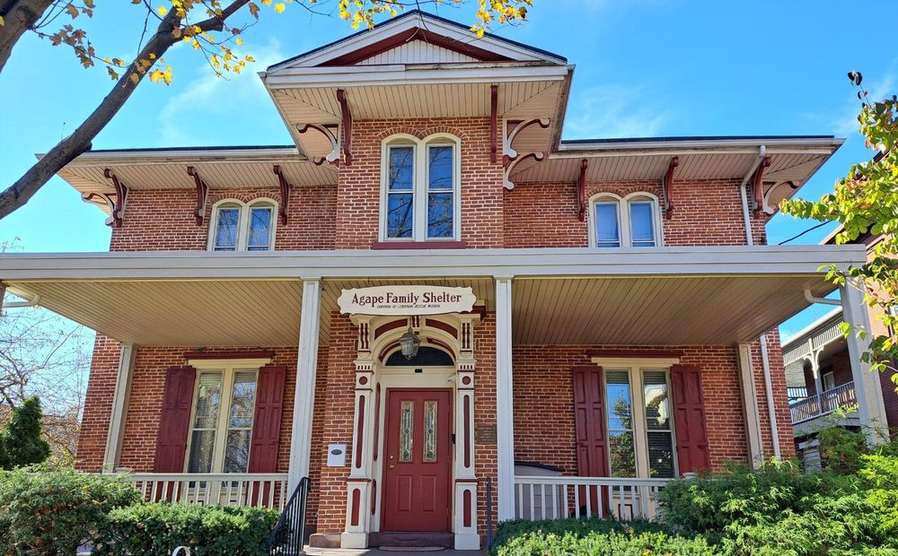
Jacob DeHuff (1836–1908)
Born and raised in Lebanon, the oldest son of Henry's second marriage, to Margaret Arndt, Jacob is best known for serving Lebanon as proprietor of DeHuff & Mitchell's bookstore at 828 Cumberland Street (presently occupied by H&R Block).
Jacob Arndt DeHuff began teaching school for several years, then around 1860 became a bank teller for eighteen years at the 1st National Bank. By 1878 he had left and gone into business with Robert Mitchell. They remained partners for five years until Mitchell went into the coal business down the block at 773 Cumberland Street.
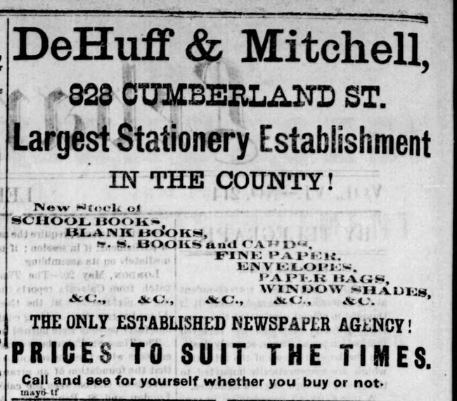
For years the store was an important part of downtown commerce, as one advertisement says for "books, stationary, and fancy goods," not just for the holidays but also where children purchased their schoolbooks.
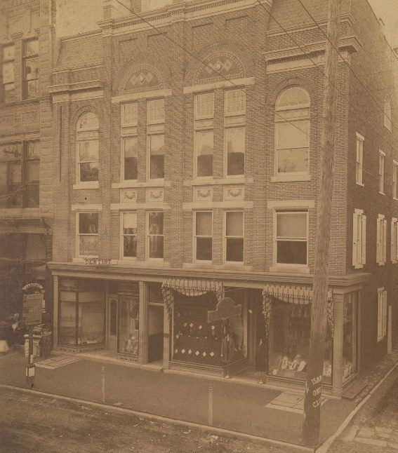
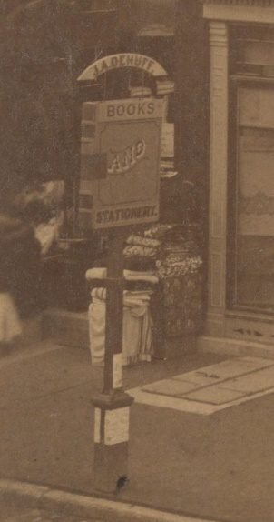
The original storefront at 828 Cumberland had become Isaac Wolfe's Clothier. When Mitchell left the business DeHuff moved next door to #824.
Furthermore, Jacob DeHuff's store was the local newspaper agency and purveyor of tickets for performances at the nearby Fisher's Opera House at 701 Cumberland.
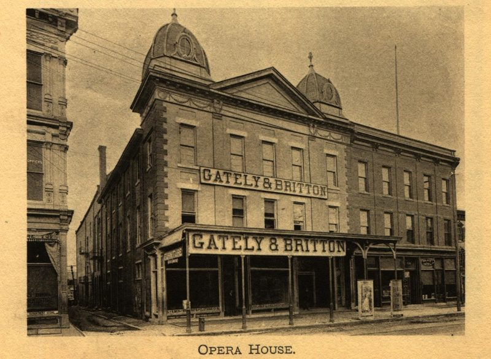
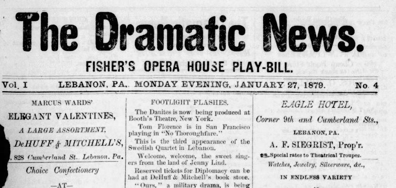
He advertised his wares, such as "elegant valentines" in the opera house playbill.
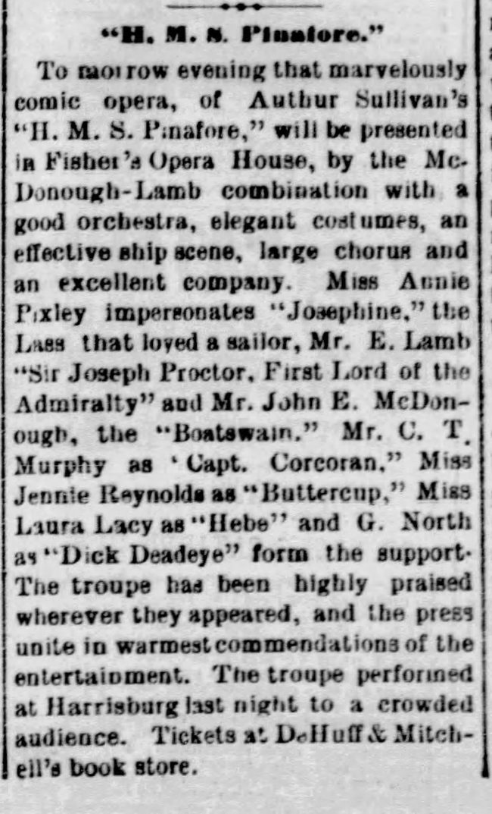
…stopping on the way from Harrisburg to Reading, DeHuff's store had pre-sales of tickets for those not wanting to wait in line. The newspaper sang its praises as the biggest and grandest ever had, a true three-ring circus with a half mile hippodrome track. Featured were Jumbo the $200,000 white elephant, Jo-Jo the Russian dog-faced boy and a "Hindoo" snake charmer. The event was heralded as "nine shows in one," kicked off by a parade into town at 8 in the morning and shows at 2pm and 8pm. Barnum, ever the showman and promoter, sadly lamented in the advertisement that this was everyone's "last chance" to see the show before it left America for Europe.
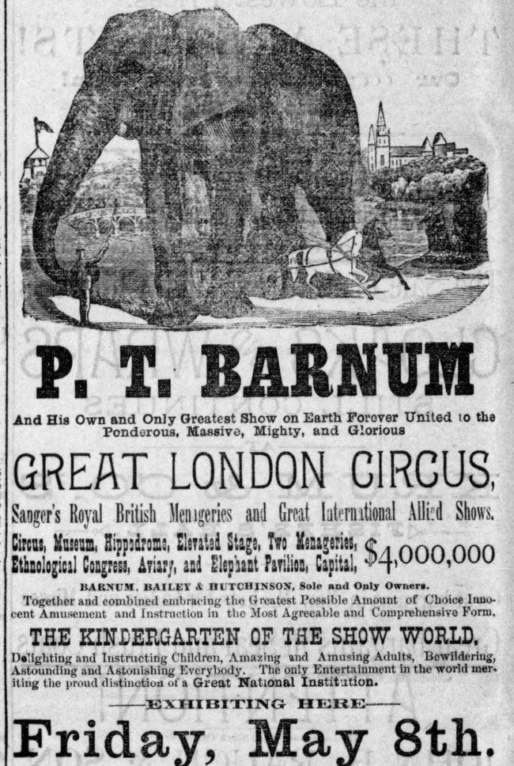
The same paper reported on the following day that it had been a successful event, excepting the seven drunks that had been rounded up into the police station house. Three paid their fines, the rest "went up" for 48 hours.
Jacob had also managed the ticket sales in 1878 for a concert at the Court house by famous cornet soloist Matthew Arbuckle. He came from Philadelphia's Academy of Music and New York's Brooklyn Tabernacle and mustered with the Massachusetts's 24th regiment band in the Civil War.
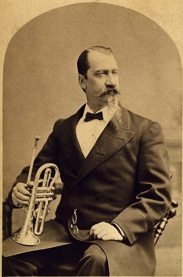
DeHuff's was not the only bookstore in Lebanon, two others were D. P. Witmeyer's on South 8th Street and J. Laudermilch a block away on 779 Cumberland. On occasion, local merchants collaborated, agreeing to setting store hours for the convenience of Lebanon's citizenry.
Older residents of Lebanon, who may recall its Five and Dime store, J. G. McCrory's, may NOT know that the store took over DeHuff's original building. The York-based chain, which started in the 1880s was planning its Lebanon debut in 1901. "McCrory's" chain finally went out of business in 2002.
Technologist
Jacob seemed to enjoy the latest developments in entertainment. In 1877, about the same time he was going into business with his bookstore, he made news for his purchase of a parlor organ.
A traveling salesman, the brother of Daniel F. Beatty from Washington, New Jersey had put on a demonstration of "Beatty's Parlor Organ" in the square by the courthouse. He drew quite a crowd, and made three sales, one to Jacob DeHuff.
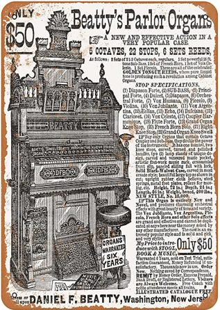
Jacob enjoyed entertaining in his home. On several occasions he hosted a "graphophone" concert, having folks over to listen to recorded music.
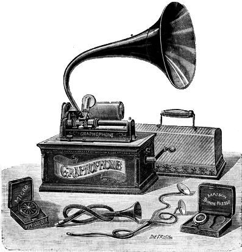
At one such event, he moved to the "Sons of America" Hall to accommodate a larger audience. In addition to recorded music was singing and playing by live performers. Hosted by his Bible class, admission was 10 cents, and they served a supper of oysters ("hot, cold, steamed and fried"), cakes and candies.
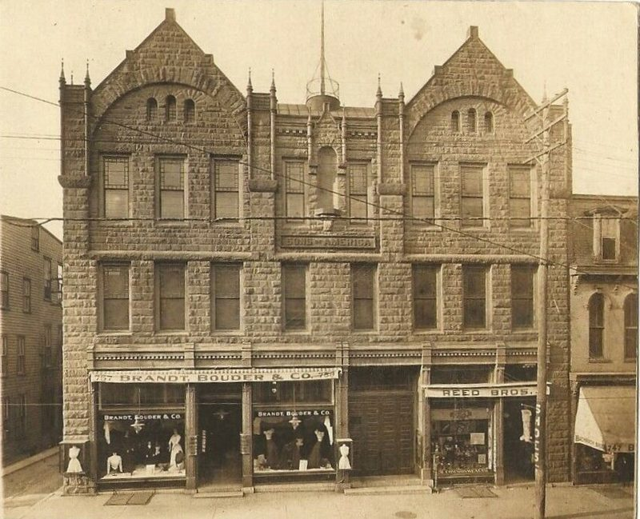
The Sons of America Hall on the 700 block of Cumberland was destroyed by fire in the 1900s. The Lebanon campus of HACC stands on the site today. Jacob was a stockholder and officer of the association that built the hall in 1889.
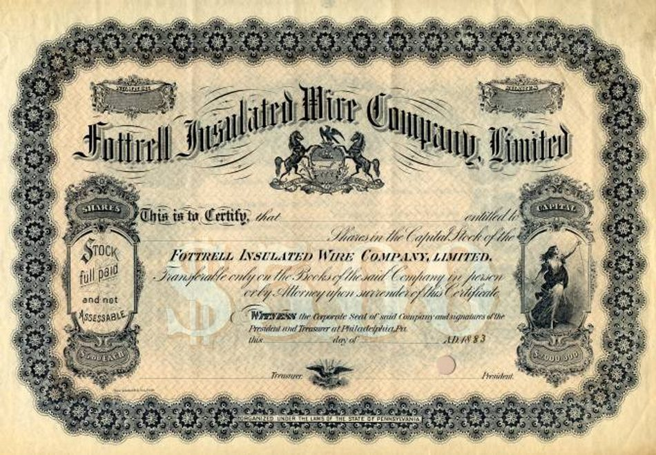
Technology of a more serious nature intrigued him as well. In 1891 the Fottrell Insulated Wire company of Philadelphia was chartered. The company had been organized by leaders in Lebanon, including Lyman Nutting and Jacob DeHuff.
The properties of the wire insulation had been tested in "an old hay shed near the electric light plant" and found satisfactory. They had tried to secure land for the plant in Lebanon near the Lebanon Valley Railroad and Third Street, but failing to make the purchase from the Pennsylvania and Reading railroad, settled for locating in Philadelphia.
Mt. Gretna's Chautauqua
In January of 1892 a group met at the courthouse to organize the "Pennsylvania Chautauqua" project. The meeting was chaired by Judge McPherson. Various ministers and professors spoke eloquently for the cause of popular higher education.
Joseph Lemberger, proprietor of the drug store, made a motion establishing a committee to sell stock subscriptions. In addition to Lemberger and several others, Jacob DeHuff was appointed to the committee.
They sold $10 shares in the organization. Several days later the articles of association were filed in the prothonotary's office by B.F. Hean. Among stock sales reported, two generous subscribers were Robert H. Coleman and Jacob DeHuff, each purchasing five shares.
DeHuff also purchased a cottage on the Chautauqua grounds; in newspaper social notices he hosted those such as the former pastor of the Centenary ME church.
Jacob's Passion
As stated on his passing, though he was well known in Lebanon's mercantile circles he was probably more intimately known as an ardent worker in Centenary Methodist Episcopal Church, devoted to its Sunday School. He led the Bible study class for over 25 years.
In 1883 his school children gave him a gift of a gold-headed cane. Years later they held a surprise party in his home on one occasion, and then his 25th anniversary was a highly publicized event.
He was also recognized for his philanthropy. When the campaign for the Home for Widows (Part 2) began, his store promoted the tickets for fundraisers such as the strawberry festival. He donated merchandise and funds to the home over the years.
Jacob DeHuff's Final Years
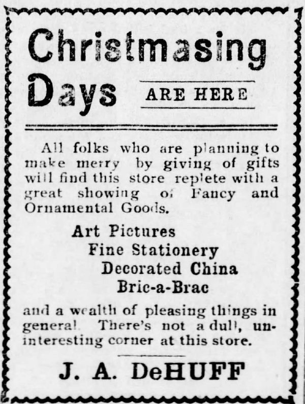
By 1900 DeHuff sold off his newspaper routes and customers to the Lebanon News Agency. The next year, he moved the business again, this time across the street to the "DeHuff Building" at 813 Cumberland. Doing so required several auctions to liquidate enough merchandise to fit into his smaller shop.
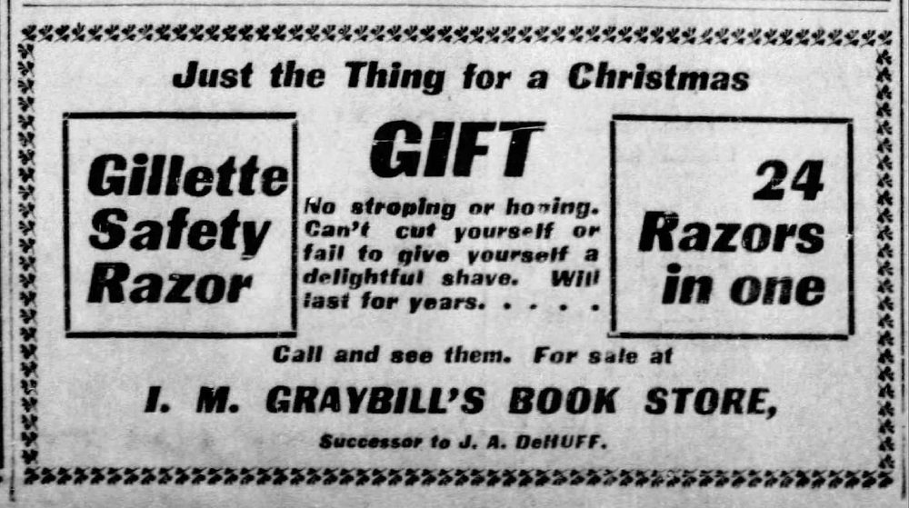
By 1904 he retired, selling the shop to his employee, John Graybill, though it would remain known by many as "DeHuff's" bookstore. At age 68 he was feeling his age. Gilbert, his younger brother by two years, had died seven years earlier.
He was still an active citizen of Lebanon, donating to charity at Good Samaritan Hospital and the Home for Widows and Single Women. He helped establish the Young Men's Christian Association (YMCA).
Never married; Jacob died in 1908. Weak legs kept him confined to his home at 520 Cumberland for more than a year. He died peacefully while napping one evening and was found by his sister. Miss Sue DeHuff shared the home with him, along with their sister Catherine ("Kate"), the widow Mrs. John Meily.
His sisters had been entertaining several other women, including sister Anna (Mrs. Richard Meily) in the adjacent parlor. Sue made the discovery upon entering his room, offering to share some ice cream.
"In his death the city has lost an exemplary citizen, the church one of its most untiring and faithful workers, and the home a devoted brother." The spirit of kindness, exemplified.
This series has been exploring the origins of the DeHuff house that in recent years has been home to many women and children served by the Lebanon Rescue Mission in its Agape Family Shelter.
Thanks now to contributions from a reader and DeHuff descendant in Amarillo, Texas, we close by circling back to Henry DeHuff, father of Gilbert, Jacob and 12 other DeHuff children, who set this story in motion. In finishing we learn a little more about early Lebanon charity.
Henry DeHuff (1794–1854)
Henry, patriarch of the Lebanon DeHuffs, was a coppersmith like his father Abraham, Jr. (1771–1814), who had plied his trade in York.
Henry's grandfather, Abraham, Sr. (1735–1821) a saddler by trade, came from Elkton, the northeast corner of Maryland. He served as Captain of a company early in the Revolutionary War; subsequently captured, spending 17 months as a prisoner-of-war.
After Henry's father died his uncle Robert Reed, a Lancaster coppersmith continued to teach him the trade. That Henry had moved to Lancaster is further confirmed by the record showing he was inducted into Lancaster's Lodge No. 43 of the F. & A. M. (Free and Accepted Masons) on December 11, 1816. The other man inducted that day was a 25-year-old Lancaster lawyer, James Buchanan — three years prior to his engagement to Anne Caroline Coleman.
Henry married (1816) Sarah Brown in Lancaster where he began working, and then moved to Lebanon in 1820.
Sarah Brown, a Molly Pitcher Story
The DeHuff family has enjoyed a legend that Henry's first wife Sarah was the original "Molly Pitcher," in the colorful story of a woman who took her wounded husband's place as an artilleryman in the Battle of Monmouth in the Revolution. While engaging in battle, the lower portion of her dress was shot away by a cannonball.
The Wikipedia account states her name as Mary Hays (buried in nearby Carlisle, PA), but adds that several women were seen that day assisting on the battlefield. The DeHuffs might still have a leg to stand on, except that Sarah was born much later in 1797. Family historian James Elfelt offers a plausible version: that Sarah was born in Trenton, near Monmouth, and it was her mother who was on the battlefield assisting and bringing water to the troops.
Margaret Arndt DeHuff (1804–1891)
Lebanon would know many DeHuffs; Henry and Sarah raised seven children before her death in Lebanon in 1831. Two years later he married Margaret Arndt, a relationship that produced seven more children. Several of these were featured earlier in this story, especially Catherine (Kate), Anna, and Abraham Gilbert DeHuff.
Margaret's parents Jacob Arndt and Susanna Schindel of Lebanon married in 1799. They also raised seven children. Two siblings of note: Catherine (1808–1885) was the second wife of Dr. John W. Gloninger (1798–1874), the family physician mentioned earlier in this story.
Susanna (1811–1848) married George Gleim, a bank officer. Their son George Gleim, Jr. (1843–1912) studied medicine with Dr. Gloninger and served Lebanon and Cornwall for many years.
Opening Shop in Lebanon
Henry announced his arrival with a notice in the newspaper on April 29th, 1820. A translation of the article informs the inhabitants of Lebanon County that he is opening his business as "Kupfer Schmiedt" (coppersmith) in the house of Mr. George Oves, opposite Mr. Gleim's inn.
Furthermore he offered a variety of copper articles, whether in stock or manufactured to order, such as tea kettles, vats for washing or dyeing, and other articles made of copper sheet, selling all "at cheap price, doing his best to earn the support of an honored public by good work and punctuality."
One special offering he mentioned were boilers for distilling whiskey. This was an important product of the county, for consumption locally and in trade with Philadelphia. His was the recent "Witmer improvement" to the distillation process patented by Anderson in 1801, sure to be preferred by his customers.
His business flourished; in a second newspaper notice three years later "Heinrich" DeHuff announced his moving further down Market Street (since renamed South 9th Street) into the house just south of Mr. Leineweber's (Lineaweaver) inn. He promised no disruption to the quality and service to his friends and public.
Well-Established
Henry grew in standing as a citizen of Lebanon. In 1839 Governor Porter appointed him prothonotary for Lebanon, along with his neighbor George Lineaweaver as Register.
The next year he became elector in 10th district for the presidential election for Martin van Buren and his vice president Richard M. Johnson.
In 1852 he was treasurer of the Lebanon School District, posting a notice in the paper advising taxpayers in the district to appear at the courthouse on a particular Saturday to pay the school tax for the year. Those failing to do so would be visited by the Constable of the Borough and be assessed an extra 5%.
In 1854, Henry DeHuff was elected to the board of directors of the North Lebanon Railroad, along with fellow directors R.W. Coleman and Wm. Coleman — uncle and father, respectively, of Robert H. Coleman, "Florida Man."
Henry died later that same year, leaving his house and estate to his wife Margaret. She continued to live in the house at 520 Cumberland Street with several of her adult children. She died in 1891, leaving the house to Jacob and Susanna.
The Brick Sunday School House and Beneficial Societies
In keeping with the theme "Spirit of Kindness," one more thread in the DeHuff story bears mentioning.
In 1846, with his neighbor George Lineaweaver and friend Israel Embich, Henry bought the old "Brick Sunday School house" formerly belonging to the Lutheran and German Reformed Church. It is described as bounded by Mulberry Street north (later known as North 10th Street), adjacent to lots of John Oswald, Jacob Arndt, John Gloninger (southeast of now 10th and Willow).
The indenture of the sale described the property as "for sole use by the Lebanon County beneficial society." Later, after Henry's death, the only surviving trustee George Linaweaver sold it to the Lebanon County Beneficial Society for $1 in 1857.
A news article in 1873 reported the "Beneficial Society" meeting the third Monday of each month in their hall on 10th Street.
This "Spirit of Kindness" story began with the Agape shelter and mentioned the Home for Widows. Were beneficial societies another example of benevolent care by Lebanon's 19th century citizens? Or could it have been a kind of men's club?
One story that year reported a controversy in the German Lutheran congregation over "secret beneficial societies." The minister opposed them to the extent of refusing to officiate at the funerals of such members.
Researching old reports in the "Lebanon Daily News" shows numerous beneficial societies had formed for a variety of reasons. DeHuff and Lineaweaver's may have begun to serve the members of their F.&A.M. lodge 226, to provide hospitalization or to look after their widows.
In the 1870s and later, beneficial societies served companies such as the Reading railroad and the Lebanon Rolling Mill. Another served the members of "St. Patrick's Hibernian Beneficial Society of the Borough of Lebanon (first formed in Philadelphia in 1790 for the relief of Irish immigrants)." St. Mary's Beneficial Society saw to the funeral of a railroad watchman who had served for years at the corner of Eighth and Railroad streets. The Pennsylvania Bolt and Nut Beneficial society paid death benefits to employees whose wives had died, and to the widow of an employee crushed in a fly wheel.
All these examples shed an interesting light on how 19th century society cared for its own, in years before the "insurance and benefits plans" offered by large corporations.
Thanks to James Elfelt of Amarillo, Texas, for being a LebTown reader, and for his wonderful and extensive contributions to this story concerning Henry DeHuff.
Other helpful input from Mike Trump, and Michael Emery, Site Administrator, Cornwall Iron Furnace, and Chief, Eastern Division of the PHMC.
Originally published as a four-part series on LebTown, October 24 – November 22, 2024.